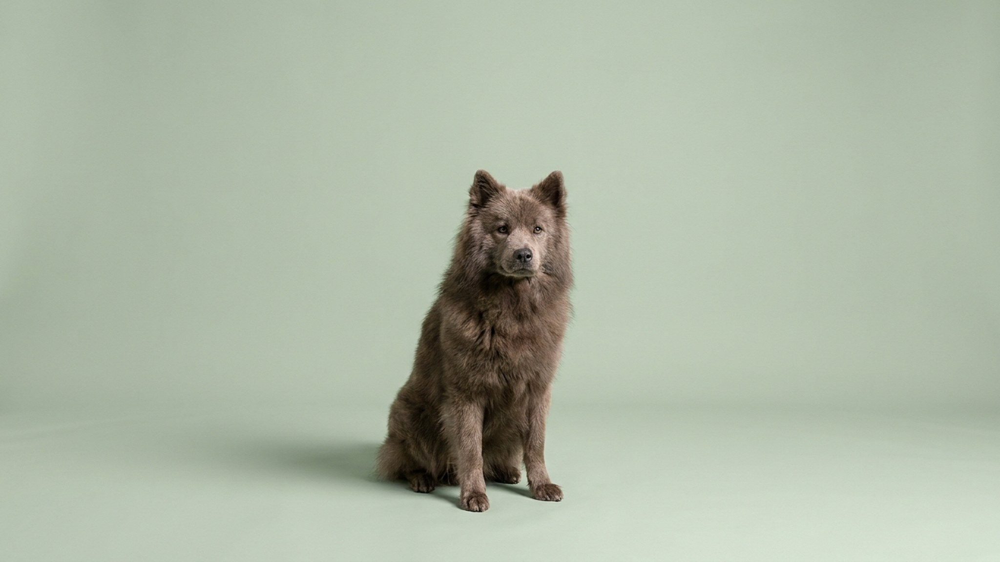

В 1973 году FCI зарегистрировала породу, у которой нет ни одной рабочей функции. Только одна задача: жить рядом с семьёй. Евразиер редко встречается в России именно потому, что создавался не для работы, а для семьи. Читайте, чтобы понять, кому этот пёс подходит точно, а кому не стоит начинать.
🐾 Ваш питомец — евразиер?
Заведите профиль в AnimaLife: приложение запомнит породу, возраст и вес и будет подсказывать по уходу именно для неё. Вопросы AI-ветеринару — круглосуточно и бесплатно.
Завести профиль → Завести в MAX →
У вас iPhone? AnimaLife есть в App Store
Работа началась в 1960 году в Германии. Кинолог Юлиус Випфель поставил конкретную задачу: вывести собаку только для жизни рядом с человеком. Не охранника, не пастуха, а компаньона. Сначала скрестили чау-чау и вольфшпица, получили «вольфчау». Через несколько лет добавили самоеда, чтобы смягчить характер и улучшить социализацию. В 1973 году порода получила официальное название «евразиер» и признание FCI. Цель оставалась неизменной с первого дня: собака без агрессии, без излишней самостоятельности, без рабочего драйва, только тесная связь с семьёй.
Евразиер уравновешен. Он не истеричен при звонке в дверь, не носится по квартире от избытка энергии, не тявкает без повода. При этом внимательно следит за каждым членом семьи и замечает перемены в настроении.
К чужим евразиер относится сдержанно: не агрессивен, но и не бросается здороваться. Это осторожность, а не страх. Правильная социализация с щенячьего возраста закрепляет ровное поведение на улице и в гостях.
Евразиер привязывается ко всей семье, а не к одному человеку. Длительное одиночество его угнетает. Пёс, которого закрывают в вольере или надолго оставляют одного, постепенно теряет ту устойчивость, ради которой порода и создавалась. Вольер для евразиера не подходит.
Евразиер не требует двухчасовых пробежек. Две прогулки по 40-50 минут в день достаточно. Ему нравится ходить рядом с хозяином, нюхать, исследовать, без жёстких нагрузочных программ. Ноузворк и поисковые игры во дворе подходят хорошо. Это не порода для агилити на соревновательном уровне, но и в квартире без прогулок он не согласен.
Двойная шерсть евразиера не требует тримминга. Но она густая и линяет дважды в год, весной и осенью, объёмно. В период линьки расчёсывайте ежедневно, в остальное время 2-3 раза в неделю. Купайте редко: жировой слой шерсти защищает кожу, частое мытьё его разрушает. Колтуны чаще образуются за ушами и в паху. Проверяйте эти зоны при каждом расчёсывании.
Евразиер хорош для семей с детьми школьного возраста: терпелив и не реагирует на шум остро. С другими домашними животными уживается при ранней социализации.
Здоровье обсудите с ветеринаром при первом визите с щенком. Порода считается здоровой, но у крупных собак есть типичные риски по суставам, и специалист поможет выстроить режим нагрузки.
🐾 У вас евразиер?
AnimaLife соберёт уход под породу: к каким болезням есть склонность, что проверять по возрасту, чем кормить и когда пора к врачу. Бесплатно, прямо в мессенджере.
Собрать план ухода → Собрать в MAX →
У вас iPhone? AnimaLife есть в App Store
🐾 Понравился разбор?
Подпишитесь на канал — каждый день разбираем по одному тревожному симптому у кошек и собак: что в пределах нормы, а когда пора к врачу. Подпишитесь, чтобы не пропустить разбор, который может спасти здоровье вашего питомца.
Материал носит информационный характер и не заменяет очную консультацию ветеринара.